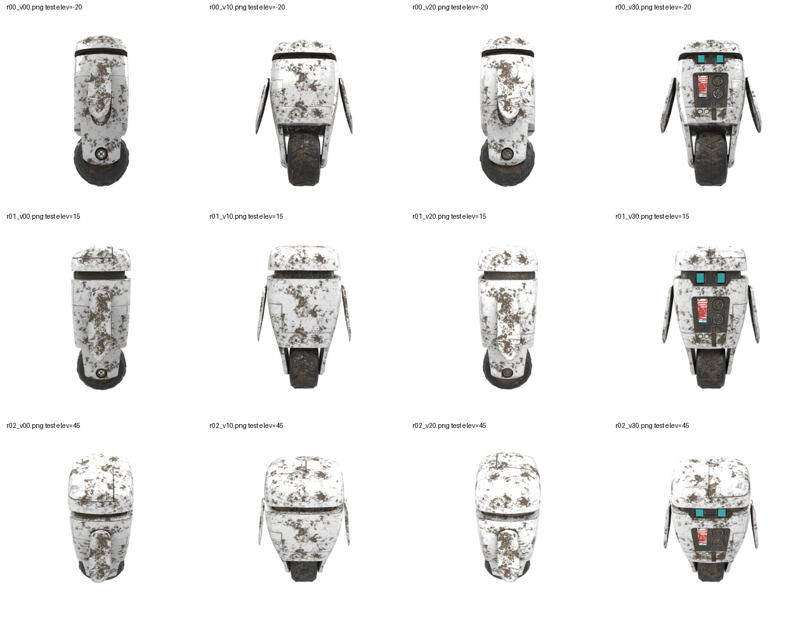
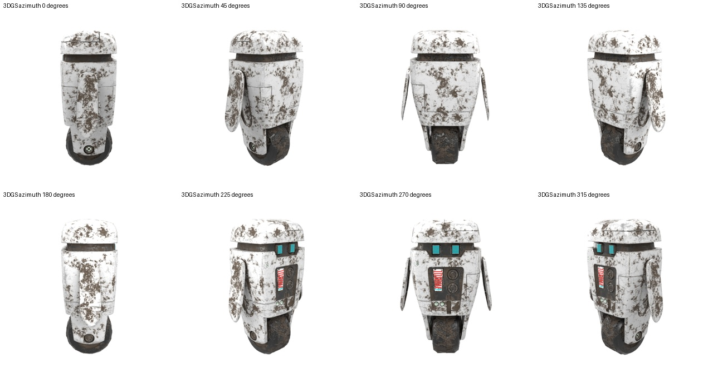
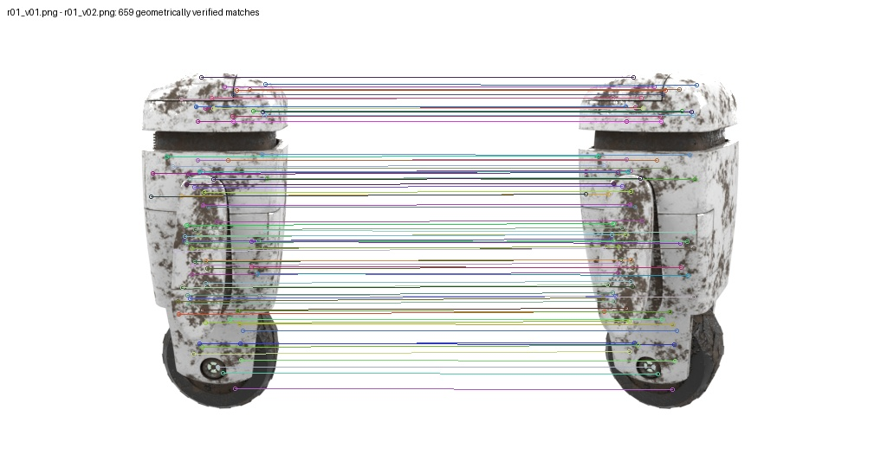
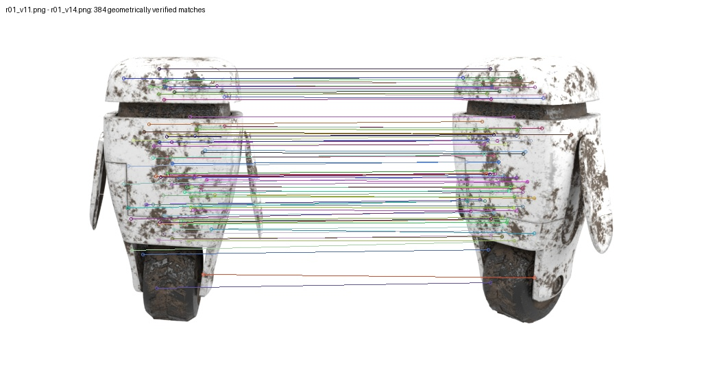
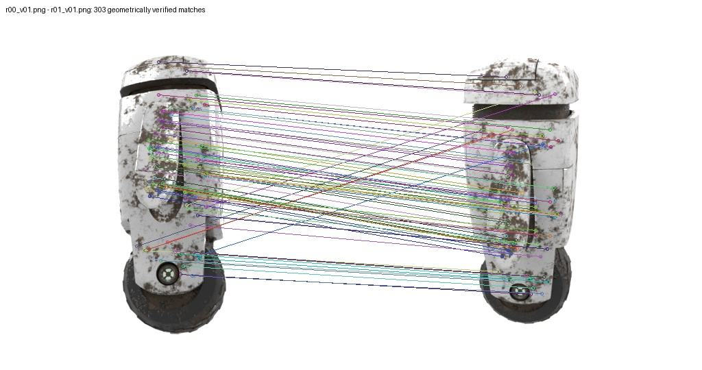
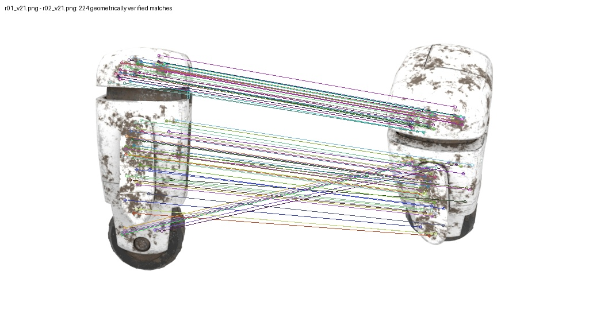

UID：502ba288b5ff45acacf0e8ca85e57774 · SfM 初始化 → 官方 3DGS

96 张训练 / 24 张测试；相机注册 96/96；稀疏点 10,610；重投影误差 0.285 px。
30,000 步，153,915 个高斯；全图 PSNR 36.292 dB，SSIM 0.98811，前景 PSNR 30.866 dB。


每张图最多画 80 条线，标题和下表记录全部几何验证内点数量。
r01_v01.png ↔ r01_v02.png：659 个内点。

r01_v11.png ↔ r01_v14.png：384 个内点。

r00_v01.png ↔ r01_v01.png：303 个内点。

r01_v21.png ↔ r02_v21.png：224 个内点。

点击视角可查看真实图像、预测图像及放大的误差。
| 视角 | 前景 PSNR | 全图 PSNR | SSIM |
|---|---|---|---|
| r00_v00.png | 30.197 | 36.560 | 0.98821 |
| r00_v05.png | 30.105 | 35.896 | 0.98470 |
| r00_v10.png | 25.380 | 29.123 | 0.97923 |
| r00_v15.png | 33.358 | 39.148 | 0.99042 |
| r00_v20.png | 31.169 | 37.264 | 0.99027 |
| r00_v25.png | 29.639 | 35.299 | 0.98346 |
| r00_v30.png | 26.421 | 28.231 | 0.97524 |
| r00_v35.png | 28.565 | 34.363 | 0.98230 |
| r01_v00.png | 31.850 | 37.509 | 0.99108 |
| r01_v05.png | 32.036 | 37.618 | 0.98774 |
| r01_v10.png | 26.936 | 31.041 | 0.98440 |
| r01_v15.png | 34.349 | 39.947 | 0.99177 |
| r01_v20.png | 32.778 | 38.158 | 0.99081 |
| r01_v25.png | 32.993 | 38.532 | 0.99098 |
| r01_v30.png | 27.366 | 31.021 | 0.98287 |
| r01_v35.png | 32.678 | 38.336 | 0.98958 |
| r02_v00.png | 33.101 | 39.469 | 0.99300 |
| r02_v05.png | 31.645 | 37.689 | 0.99118 |
| r02_v10.png | 29.802 | 35.228 | 0.98731 |
| r02_v15.png | 32.270 | 38.358 | 0.99212 |
| r02_v20.png | 33.865 | 40.100 | 0.99322 |
| r02_v25.png | 32.809 | 38.816 | 0.99248 |
| r02_v30.png | 27.678 | 33.527 | 0.98922 |
| r02_v35.png | 33.804 | 39.770 | 0.99309 |
7,000 步前景 PSNR：28.995 dB。7k 对照图 · 30k 同视角对照图。
| 独立测试高度 | 视角数 | 前景 PSNR | 全图 PSNR | 示例 |
|---|---|---|---|---|
| 0° | 12 | 28.227 | 33.134 | 对照图 |
| 30° | 12 | 29.253 | 35.060 | 对照图 |
| 60° | 12 | 26.601 | 33.373 | 对照图 |
0°/30°位于训练高度之间，60°超过训练最高高度。所有测试图像未参与训练。逐视角指标
本页为可提交的紧凑结果。原始数据、SQLite 数据库、高斯 PLY、训练检查点和全部 PNG 保存在本地 outputs/ 对应目录。